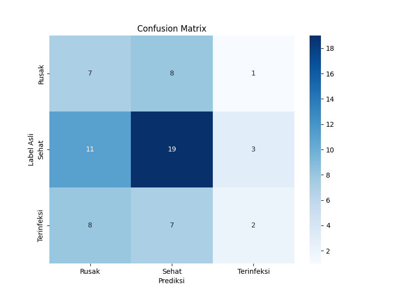

Klasifikasi Gambar Cabai
Silakan unggah gambar cabai untuk mengetahui kondisinya.
Model CNN - Analisis Data
Pilih salah satu tab di bawah untuk melihat informasi model.
Grafik Akurasi
Grafik Akurasi CNN
Grafik Akurasi NASNet
Grafik Akurasi VGG16
Grafik Akurasi Xception
Confusion Matrix
Analisis keakuratan model berdasarkan prediksi dan data sebenarnya.
Confusion Matrix CNN
Confusion Matrix NASNet
Confusion Matrix VGG16
Confusion Matrix Xception
ROC Curve
Kurva ROC untuk mengevaluasi performa model.